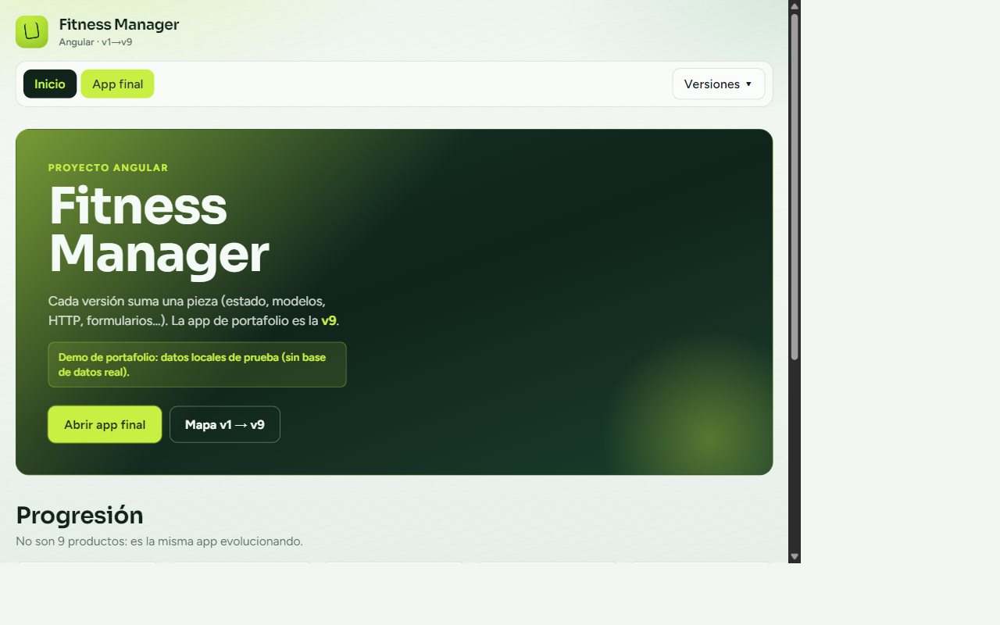

Proyecto Angular
Fitness Manager
App de gestión de rutinas en Angular + TypeScript. Evolución didáctica v1 → v9 hasta la app final con CRUD, favoritos, reto diario y plan semanal.

- Progresión por versiones (v1–v9) como mapa de aprendizaje
- App final: filtro, edición y borrado de rutinas
- Favoritos, desafío diario y plan semanal
- Supabase opcional o modo demo con datos locales